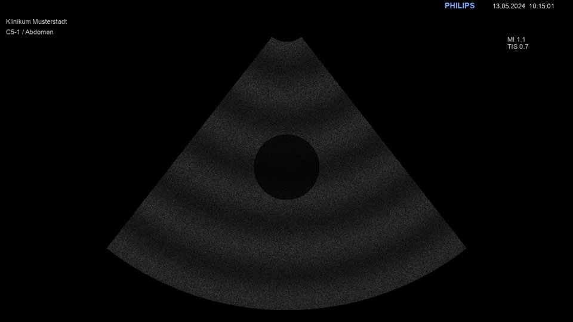
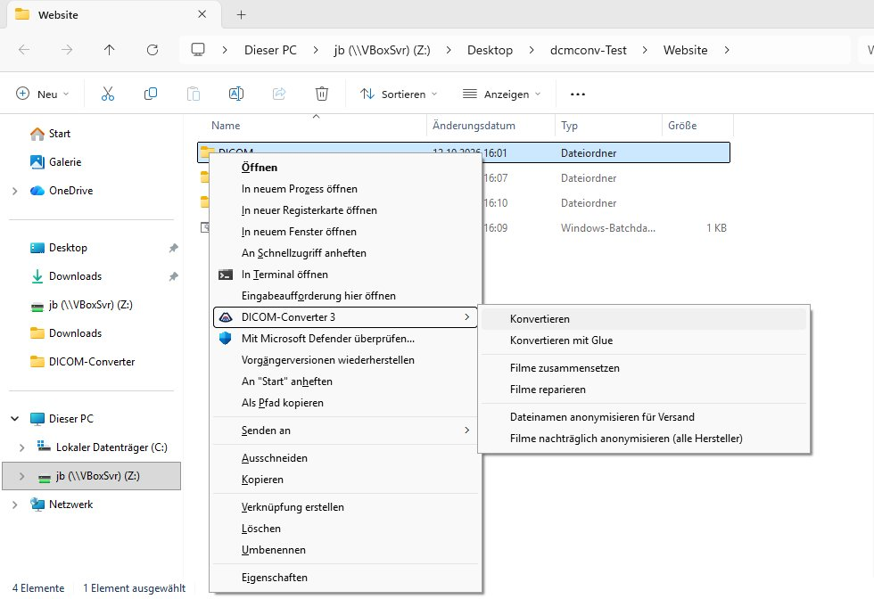
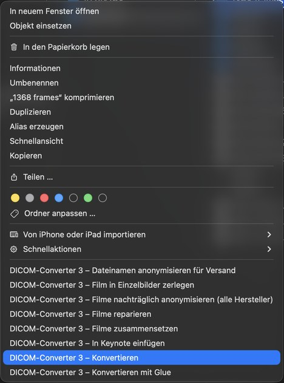
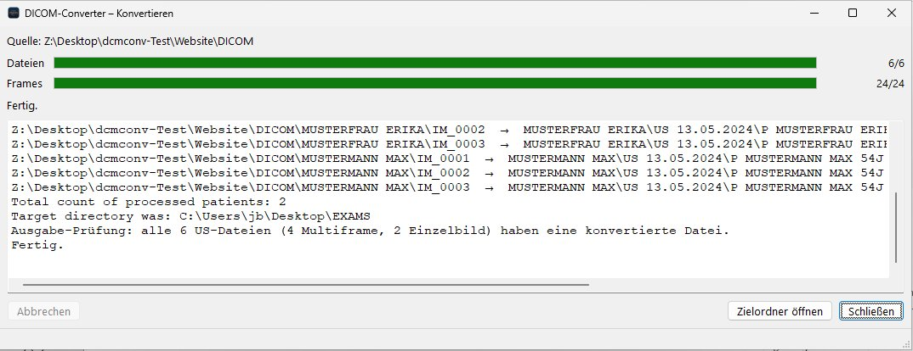
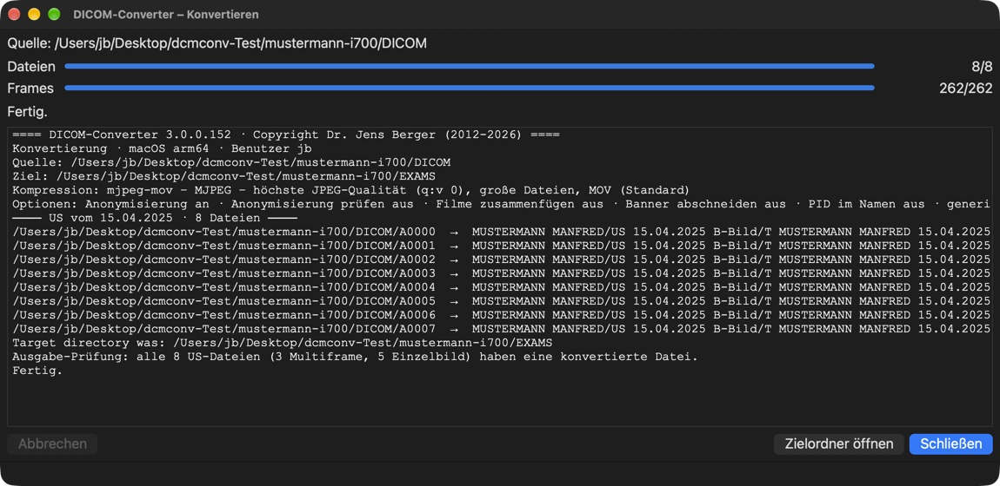
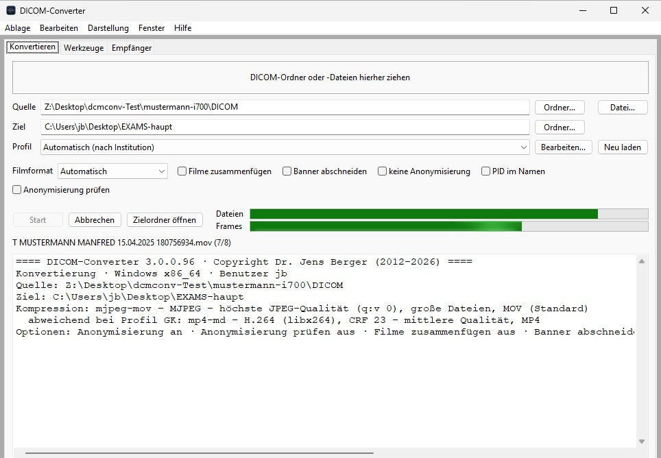
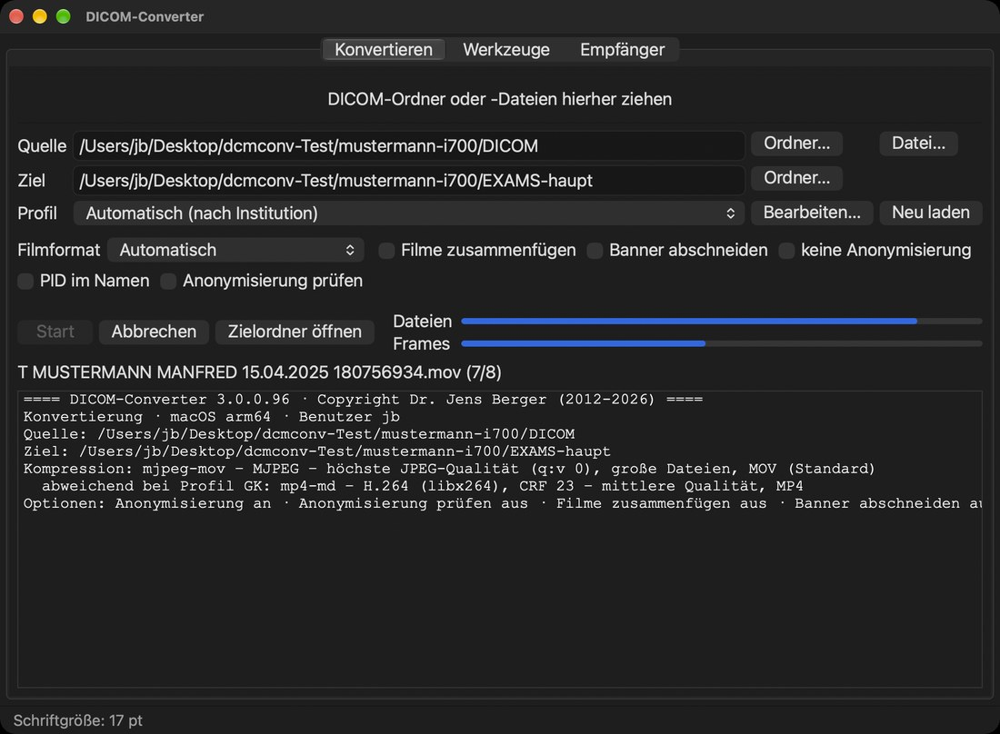
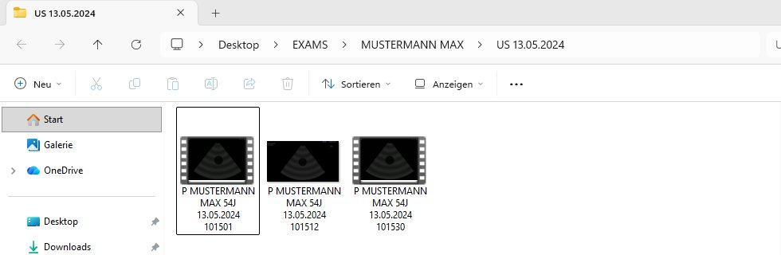
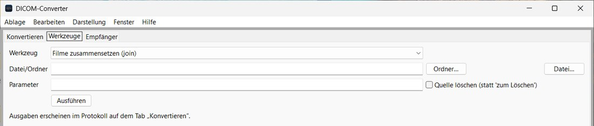
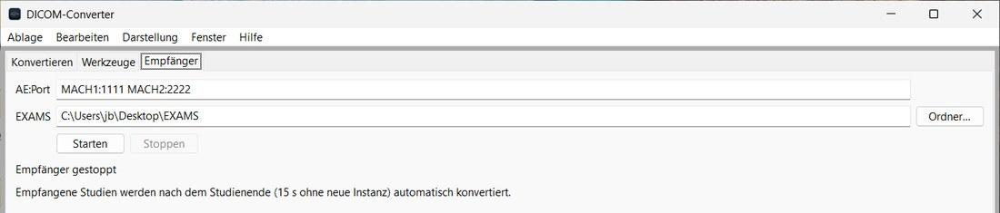

DICOM-Converter
Version 3.0.0.86 · Stand 19.10.2026 · für macOS und Windows
Der DICOM-Converter macht aus Ultraschall-Untersuchungen ganz normale Filme und Bilder, die man mit jedem Programm ansehen, in PowerPoint oder Keynote einbauen oder weitergeben kann – und er entfernt dabei Name, Patienten-ID und Geburtsdatum aus dem Bild.
Herunterladen
Version 3.0.0.86 · Was ist neu gegenüber 2.0.8 (PDF)
Was er macht
Ultraschallgeräte speichern ihre Bilder im Format DICOM. Diese Dateien lassen sich auf einem normalen Computer kaum öffnen, und im Bild stehen die Patientendaten. Der DICOM-Converter
- wandelt jede Filmschleife (Loop) in einen Film und jedes Standbild in ein PNG-Bild um,
- überdeckt Name, ID und Geburtsdatum im Bild – passend für jedes unterstützte Gerät, Logos und Messwerte bleiben sichtbar,
- sortiert die Ergebnisse ordentlich: ein Ordner pro Patient, darin ein Ordner pro Untersuchung.

Installieren
Die Installationsprogramme gibt es oben unter Herunterladen. Weitere Software ist nicht nötig.
Mac
- DICOM-Converter-macOS.pkg doppelklicken.
- Meldet macOS, das Paket könne nicht geöffnet werden: Systemeinstellungen → Datenschutz & Sicherheit → Trotzdem öffnen.
- Dem Installationsprogramm folgen. Eine ältere Version wird entfernt – Ihre bisherigen Untersuchungen bleiben erhalten.
Windows (ab Windows 10)
- DICOM-Converter-Windows-Setup.exe doppelklicken.
- Warnt Windows („Der Computer wurde durch Windows geschützt“): Weitere Informationen → Trotzdem ausführen, dann die Frage nach Administratorrechten mit Ja beantworten.
- Ist noch ein alter DICOM-Converter da, fragt das Installationsprogramm, ob er entfernt werden soll – Ihre Untersuchungen bleiben erhalten.
Am schnellsten: Rechtsklick auf den Ordner
Den Ordner mit den DICOM-Daten (z. B. vom USB-Stick oder von der CD) mit der rechten Maustaste anklicken:
- Windows: DICOM-Converter 3 → Konvertieren. Unter Windows 11 erst auf Weitere Optionen anzeigen klicken.
- Mac: DICOM-Converter 3 – Konvertieren ganz unten im Menü (bei manchen Macs im Untermenü Schnellaktionen).


Ein kleines Fenster zeigt, wie weit die Umwandlung ist, und listet am Ende jede Datei mit ihrem Ergebnis auf. Mit Zielordner öffnen sehen Sie die fertigen Filme.


Mit dem Programmfenster
„DICOM-Converter“ im Startmenü (Windows) bzw. im Ordner Programme (Mac) öffnen. Dann:
- Quelle: den DICOM-Ordner in das Fenster ziehen – oder auf Ordner… klicken.
- Start klicken. Die Balken zeigen den Fortschritt, darunter steht das Protokoll.
- Zielordner öffnen zeigt die Ergebnisse.
Alles andere kann normalerweise so bleiben. Die fertigen Dateien landen im Ordner EXAMS auf dem Schreibtisch.


Die Schalter in einfachen Worten
| Filmformat | „Automatisch“ liefert die beste Qualität. Für PowerPoint oder E-Mail gibt es kleinere MP4-Varianten. |
| Filme zusammenfügen | Alle Loops einer Untersuchung werden ein einziger Film. |
| Banner abschneiden | Die Kopfzeile mit den Gerätedaten wird ganz abgeschnitten statt überdeckt. |
| PID im Namen | Die Patienten-ID steht zusätzlich im Ordnernamen. |
| Anonymisierung prüfen | Liest die fertigen Bilder noch einmal per Texterkennung und warnt, falls doch Patientendaten zu sehen sind (dauert länger). |
| keine Anonymisierung | ⚠ Patientendaten bleiben im Bild – nur für interne Zwecke. |
So sieht das Ergebnis aus
EXAMS
└── MUSTERMANN MAX
└── US 13.05.2024
├── P MUSTERMANN MAX 54J 13.05.2024 101501.mov ← Film
├── P MUSTERMANN MAX 54J 13.05.2024 101512.png ← Standbild
└── P MUSTERMANN MAX 54J 13.05.2024 101530.mov ← Film
Der Dateiname nennt Gerätehersteller (hier P = Philips), Name, Alter, Datum und Uhrzeit der Aufnahme. Der Name steht nur im Dateinamen, nicht im Bild. Sortiert nach Datum erscheinen die Dateien in der Reihenfolge der Untersuchung.

Was er noch kann
| Funktion | Wozu |
|---|---|
| Konvertieren mit Glue | Wie Konvertieren, aber alle Loops einer Untersuchung als ein Film. |
| Filme zusammensetzen | Alle Filme eines Ordners zu einem Film verbinden. |
| Film in Einzelbilder zerlegen | Jedes Bild eines Films als PNG speichern, z. B. für Abbildungen. |
| Filme reparieren | Filme, die sich nicht abspielen lassen, neu speichern. |
| Dateinamen anonymisieren für Versand | Entfernt Namen aus den Dateinamen, auf Wunsch gleich als ZIP zum Verschicken. |
| Filme nachträglich anonymisieren | Für Filme und Bilder, die direkt vom Gerät als AVI/MP4 exportiert wurden: Hersteller und Patientendaten werden am Bild erkannt und überdeckt. |
| In Keynote einfügen | Nur Mac: Filme direkt in eine Keynote-Präsentation. |
| In PowerPoint einfügen | Mac und Windows: Bilder und Filme direkt in eine PowerPoint-Präsentation – auch einen ganzen Ordner. |
| Empfänger | Das Ultraschallgerät schickt Untersuchungen direkt per Netzwerk an den Rechner; sie werden automatisch umgewandelt. |
Alle diese Funktionen gibt es im Rechtsklick-Menü bzw. im Programmfenster auf den Reitern Werkzeuge und Empfänger.


Datenschutz – bitte beachten
- Meldet das Programm „generisch anonymisiert – bitte prüfen“ oder „Mögliche unzureichende Anonymisierung“, die genannten Dateien vor der Weitergabe ansehen.
- Von Hand ins Bild getippte Bemerkungen kann das Programm nicht erkennen.
- Der Ordner EXAMS/unsupp_res enthält Beispieldateien unbekannter Geräte mit allen Patientendaten – nicht weitergeben.
- Der Patientenname steht im Dateinamen. Vor dem Verschicken „Dateinamen anonymisieren für Versand“ benutzen.
Hilfe
Im Programm unter Hilfe → Kurzanleitung bzw. Hilfe → Handbuch steht alles ausführlich (unter Windows auch im Startmenü unter „DICOM-Converter“).
| Problem | Lösung |
|---|---|
| Mac: „… kann nicht geöffnet werden“ | Rechtsklick auf das Programm → Öffnen |
| Windows: SmartScreen blockiert | Weitere Informationen → Trotzdem ausführen |
| Eine Datei ist „nicht unterstützt“ | Das Gerät ist noch nicht eingerichtet – bitte melden. |
| Im Bild ist noch ein Name zu sehen | Datei nicht weitergeben und melden. |
Unterstützen
Der DICOM-Converter ist kostenlos. Wer die Weiterentwicklung unterstützen möchte, kann das gern über PayPal tun – vielen Dank!
Diese Seite zählt Aufrufe und Downloads anonym (GoatCounter, ohne Cookies, ohne Speicherung von IP-Adressen).
Alle Bilder auf dieser Seite zeigen erfundene Beispieldaten („Mustermann“).
DICOM-Converter 3.0.0.86 · Copyright Dr. Jens Berger (2012-2026)